Abernathy farm
アバナシー・ファーム
— ブレイク・アバナシー
アバナシー・ファームは、2287年の連邦に位置するロケーションであり、居住地となる可能性を秘めた場所です。
背景
アバナシー・ファームは、戦前の巨大な高圧鉄塔の周囲に建設された農場であり、ブレイク・アバナシー、コンニー・アバナシー、そして娘のルーシーとメアリーからなるアバナシー一家が居住・経営しています。
この農場は、近くのUSAF衛星通信基地オリビアを拠点とするレイダー軍団のリーダー、アックアックによる定期的な略奪の被害を受けている農場の一つです。
唯一の生存者がアバナシー・ファームに到着する頃には、これらの強請りが暴力に発展し、メアリーが亡くなっています。
レイアウト
アバナシー・ファームは、テイトやメロンが栽培されている広大で一部未開墾のエリアをカバーしており、プレイヤーはルーシーからキャップと引き換えに収穫した作物を渡すことができます。
農家は、高圧鉄塔のフレームに組み込まれた2階建ての仮設構造物です。
内部にはすでに照明が点灯していますが、使用可能な電力はありません。
居住地としての特徴
「Returning the Favor」を完了すると、アバナシー・ファームが利用可能になります。
居住地は適度な広さで、すでに2つの作物用区画が指定されていますが、他の作物を植えたり水を引いたりするための耕作地がたくさん残っています。
南東には広大な土地があり、農業や入居者の住宅に最適です。
しかし、農場の周囲にはジャンクが少ないため、建設には供給ラインに頼る必要があるかもしれません。
この農場がある地域は特に危険ではないため、居住地への襲撃中に攻撃してくる敵は比較的低レベルです。
しかし、攻撃を受ける際は、メロン畑の向こう側の北、テイト畑の向こう側の南、そして家のすぐ東から攻撃が来ます。
居住者（インハビタンツ）
アバナシー・ファームに暮らす、あるいはかつて暮らしていた人々や動物たちです：
- ブレイク・アバナシー (Blake Abernathy) - 一家の家長。
- コンニー・アバナシー (Connie Abernathy) - ブレイクの妻。商人。
- ルーシー・アバナシー (Lucy Abernathy) - ブレイクの生き残った娘。メロンをキャップと交換する非公式クエストを出す。
- メイジー (Maisie) - タビー（縞模様）の飼い猫。
- クララベル (Clarabell) - アバナシー家のバラモン。
- メアリー・アバナシー (Mary Abernathy) - ブレイクの亡くなった娘。アックアックの襲撃の際に殺害された。
関連クエスト
- Returning the Favor (恩返し): ブレイク・アバナシーはプレイヤーに対し、娘を殺害し、近くのUSAF衛星通信基地オリビアに立てこもっているレイダーから、亡き娘のロケットを取り戻すよう依頼します。ロケットは、ミニガンを操るギャングのリーダー、アックアックによって厳重に守られています。
- Ghoul Problem (グールの問題): 入居者が、近くの場所を恐怖に陥れているフェラル・グールの対処を手伝ってほしいとプレイヤーに依頼します。
- Kidnapping (誘拐)
- Raider Troubles (レイダーのトラブル)
- Lucy Abernathy (quest): ルーシー・アバナシーは、プレイヤーが持ってきたメロン1つにつきキャップを支払います。この非公式クエストは「Returning the Favor」を完了するまで繰り返すことができます。
注釈 (Notes)
- ここではアバナシー家の人々の間でユニークなNPC会話を聞くことができます。
- アバナシー・ファームは、レイダーのキャンプからロケットを回収する（Returning the Favor）か、アバナシー一家を追い払うかの2つの方法で居住地にすることができます。
- アバナシー・ファームは、フィンチ・ファームの13階、スペクタクル・アイランドの10階を凌ぐ、20階という可能な限り高い建築制限を持っています。
- 人間の入居者とは異なり、メイジーとクララベルは居住地への襲撃中に死亡すると永久に死んだままになります。また、時間の経過とともに失った体力を回復することもありません。
クララベルは餌箱に反応しません。もし餌箱を設置しても、彼女は他のすべてのバラモンとは異なり、今の場所に留まります。そのため、彼女を囲むフェンスを解体しても、その場所に留まったままになります。 - メアリーの墓は、居住地の北西、建築エリアのすぐ外に見ることができます。墓には印がなく、泥の上には濡れた足跡があり、最近埋葬されたことを示しています。墓の上にはドライフラワーの花束が置かれています。
- アバナシー・ファームは、サンクチュアリやレッドロケット・トラックストップのために作物を集めることができる、最初で最も安全な場所の一つです。
- 主寝室にあるベッドとマットレスを解体することは不可能ですが、サイドの部屋にある独立したマットレスは解体することができます。
不具合 (Bugs)
- [PC] アバナシー一家を居住地内の既存のベッドに割り当てると、他の入居者が様々なタスクに割り当てられなくなる不具合が発生する場合があります。
- デフォルトで設置されている3つのベッドには不具合があり、居住地の幸福度を計算する際に屋外にあるとみなされます。これを修正するには、3つの新しいベッドを作成し、アバナシー一家（および募集した入居者）をプレイヤーが作成したベッドに割り当てる必要があります。
あるいは、コンソールを開き、該当するベッドを選択して「disable」の後に「markfordelete」と入力することで修正できます。その後、新しいベッドを配置し、手動で割り当ててください。 - 入居者がタスクに割り当てられてから反応するまでの時間は、通常の居住地よりも大幅に長くなります。そのため、何も割り当てられないように見えることがあります。特定のリソースに割り当てられるまで、30秒から5分以上かかる場合があります。
- 既存の作物は、ワークベンチにアクセスできるようになった直後に一度引き抜いて植え直す必要があるかもしれません。そうしないと、その後の訪問で割り当てができなくなる可能性があります。
ギャラリー
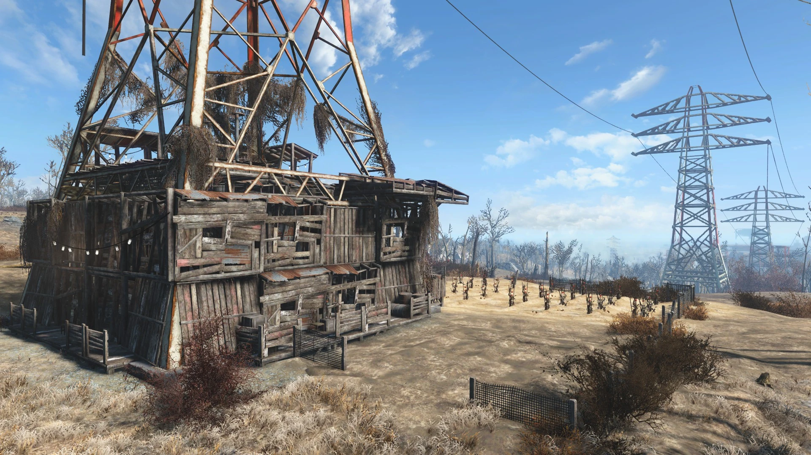
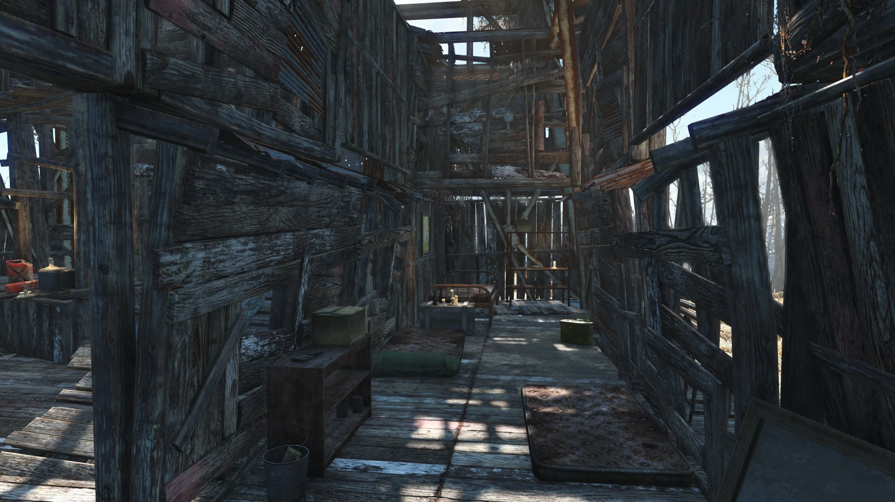
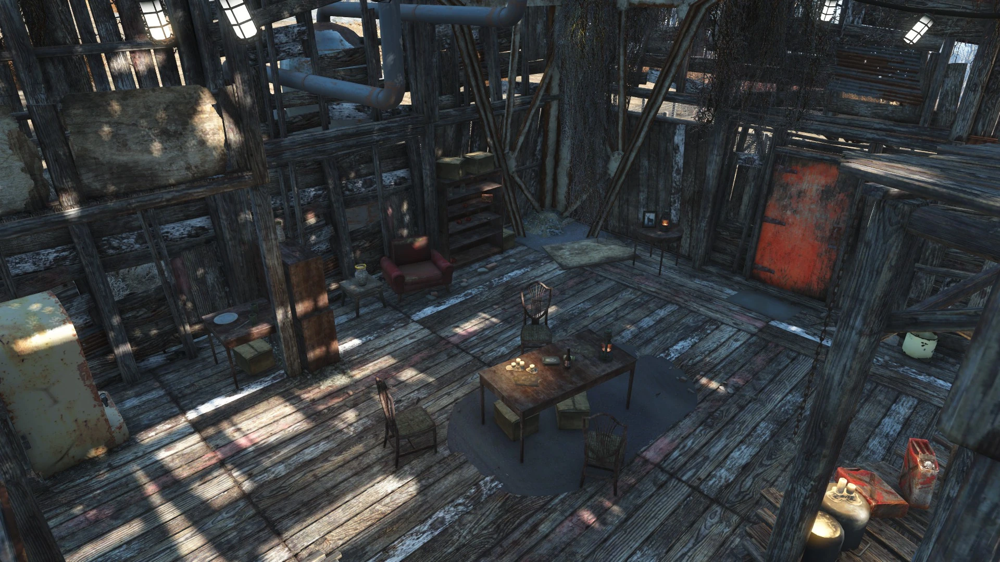
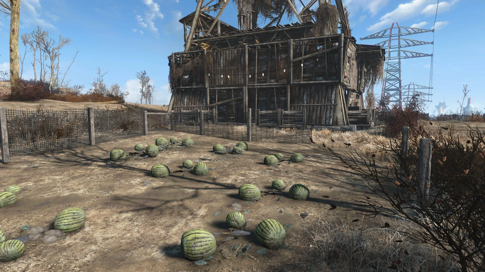
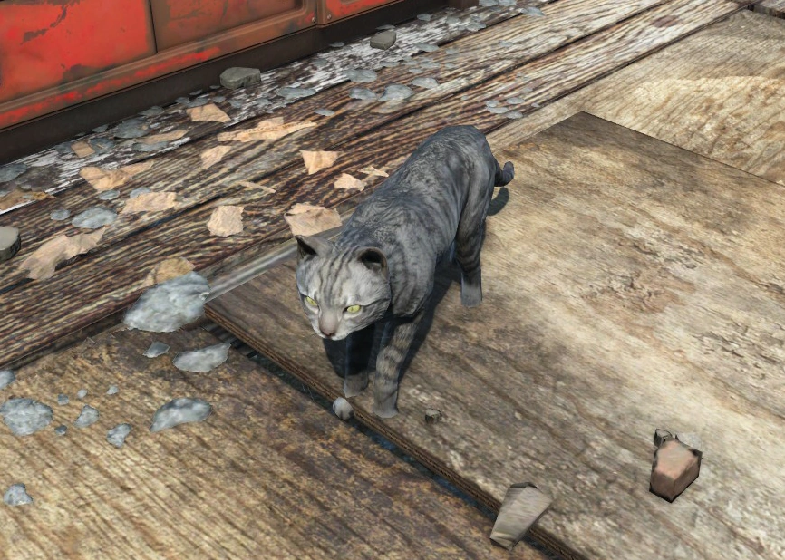
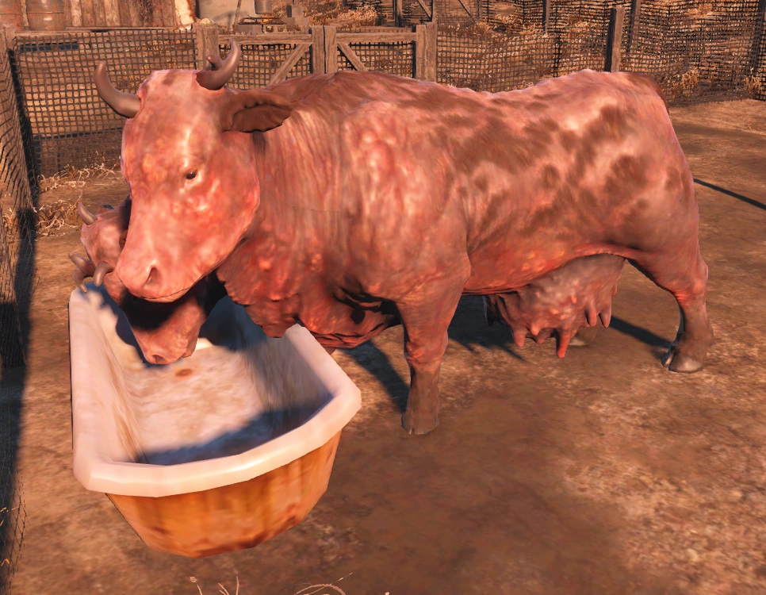
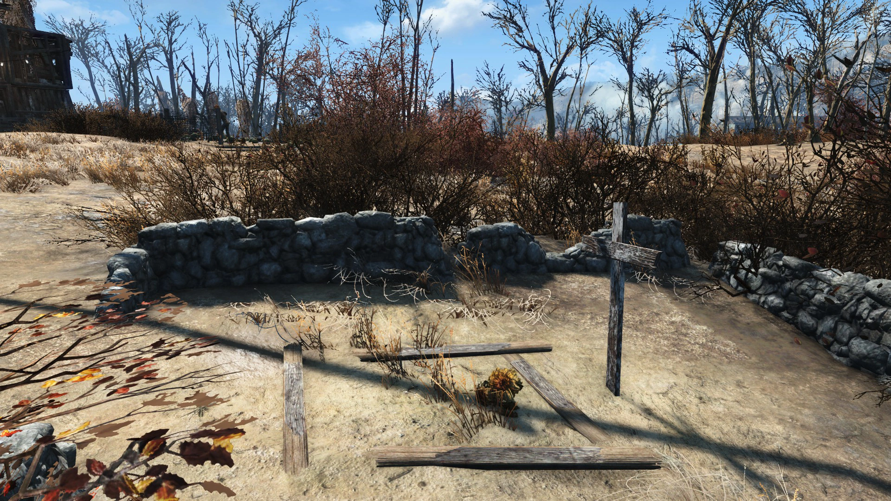
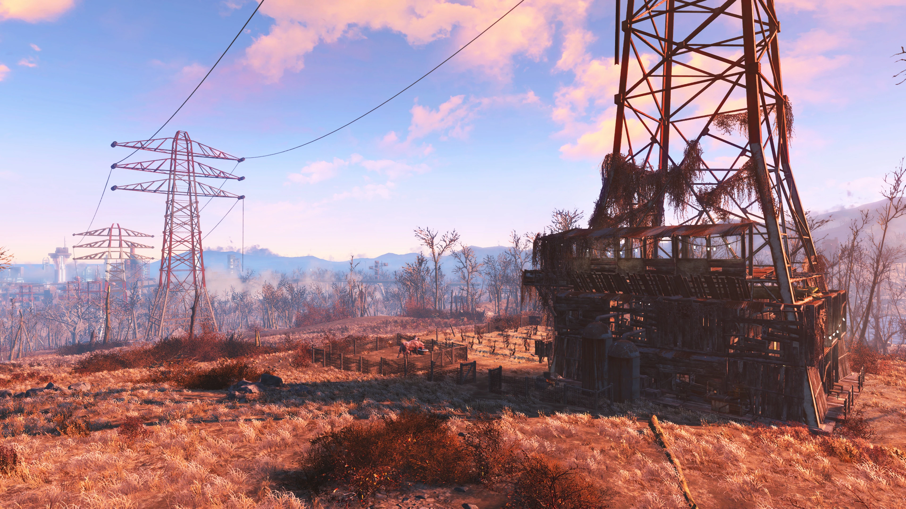
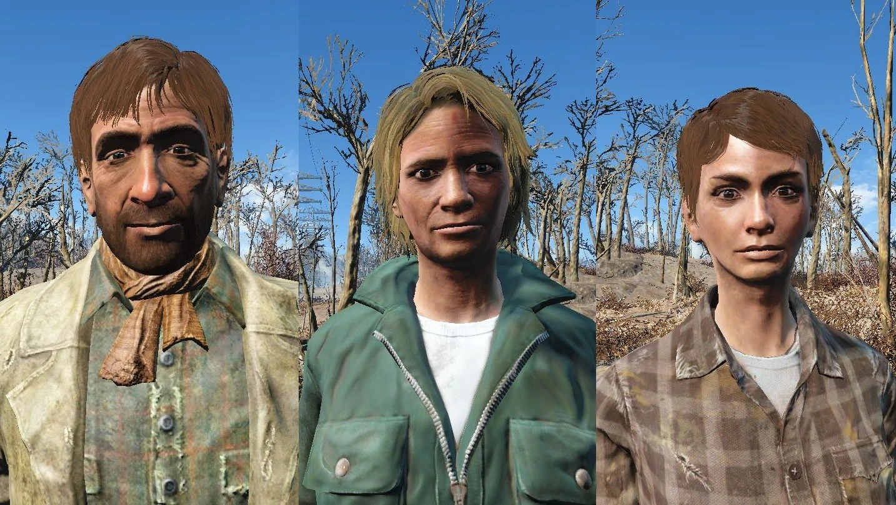
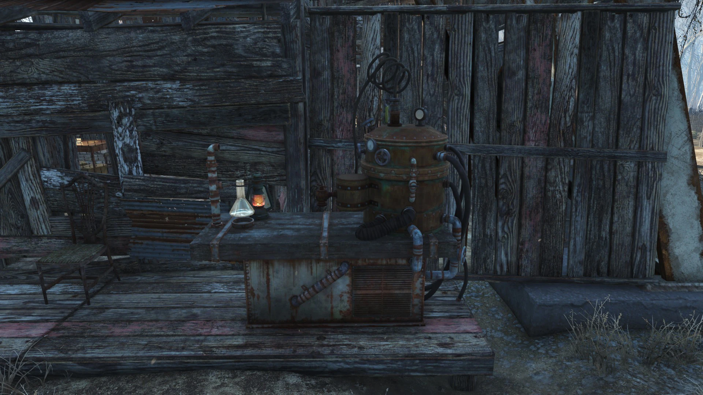
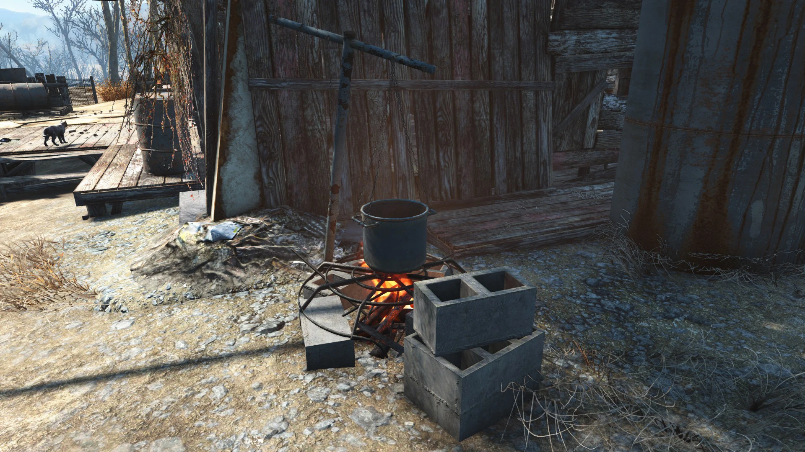
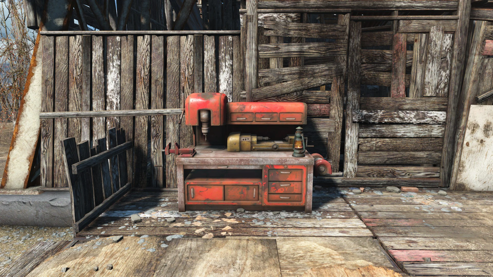
娘を殺された農夫の悲痛な依頼から始まり、ミニガン持ちのレイダー討伐へと誘われる序盤の王道クエストの起点。広大なテイト畑と、FO4界隈で有名な「どこまで高く積めるか限界に挑む高層建築の聖地」としての顔を持つ、愛着の湧きやすい農場です。一家の歴史が刻まれたこの場所は、連邦の再建を目指す者にとって忘れられない拠点となるでしょう。
This article was created by translating and editing Abernathy farm from Nukapedia: The Fallout Wiki.
Licensed under the Creative Commons Attribution-Share Alike License (CC BY-SA 3.0).
© Overseer Mohi's Terminal — Fallout Lore Archive
コミュニティ維持のため、寄付を受け付けております。
> COMMENTS